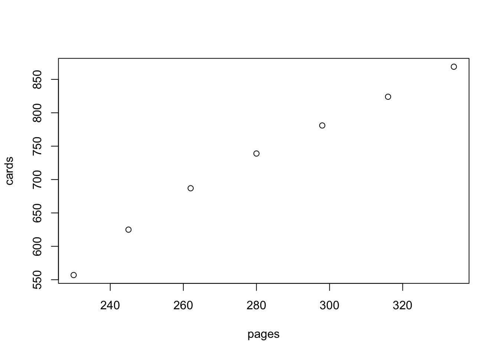

I’m studying for my pediatric recertification board exam right now, and to help me remember things, I’m making flashcards as I read an exam study book. Lately, I’ve been wondering how many flashcards I will have by the time I reach the end of the book.
I average about 15 pages a day and about 45 flashcards a day, or 3 flashcards per day. The book itself is 849 pages long, with the real content starting on page 43. It would make sense that I should have \((849 - 43 + 1)*(3)\), or 2421 cards.
That’s the most logical prediction, but I wondered what would happen if I used linear regression to try to predict my flashcard deck size.
I only started keeping track in the last week or so, but here’s the data. The first column is the page I’ve completed and the second is the cumulative number of flashcards as of that page.
230 557
245 625
262 687
280 739
298 781
316 824
334 869Ok, let’s enter the data first
cards <- c(557, 625, 687, 739, 781, 824, 869)
pages <- c(230, 245, 262, 280, 298, 316, 334)Here’s a quick plot of the data. You can see the relationship is roughly linear.
plot(pages,cards)
Let’s make the linear regression model.
model1 <- lm(cards~pages)
summary(model1)##
## Call:
## lm(formula = cards ~ pages)
##
## Residuals:
## 1 2 3 4 5 6 7
## -21.687 2.741 15.361 15.075 4.789 -4.497 -11.782
##
## Coefficients:
## Estimate Std. Error t value Pr(>|t|)
## (Intercept) -89.4079 45.7663 -1.954 0.108
## pages 2.9048 0.1618 17.955 9.84e-06 ***
## ---
## Signif. codes: 0 '***' 0.001 '**' 0.01 '*' 0.05 '.' 0.1 ' ' 1
##
## Residual standard error: 14.99 on 5 degrees of freedom
## Multiple R-squared: 0.9847, Adjusted R-squared: 0.9817
## F-statistic: 322.4 on 1 and 5 DF, p-value: 9.842e-06In the model we can see that there is an intercept that predicts we would have -89 cards at page 0, and 35 cards on page 43. Really, we should have 0 cards on page 43 since that’s the first page of study material, but in the grand scheme, that’s not too bad.
Finally, let’s predict what number of cards I will have by page 849.
predict(model1, data.frame(pages=849), interval = "prediction")## fit lwr upr
## 1 2376.734 2136.838 2616.63This prediction is pretty darn close to the one I made by guessing above (2421)! Obviously it is much easier computationally to do the first method rather than the linear regression method, but it was just for fun and practice with the lm and predict.lm functions.
By the way, there is great peril in predicting outside of the bounds of the observed data, so this type of prediction really should not be done for any important situation.